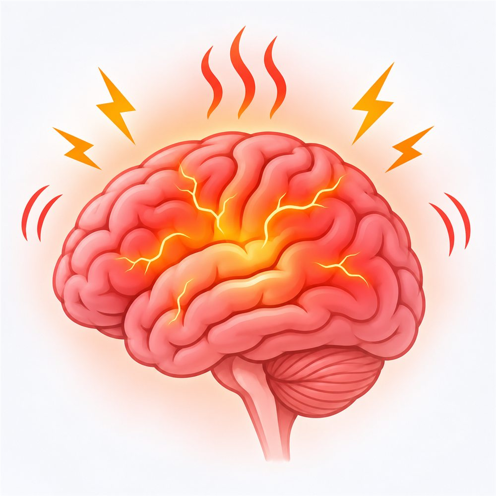
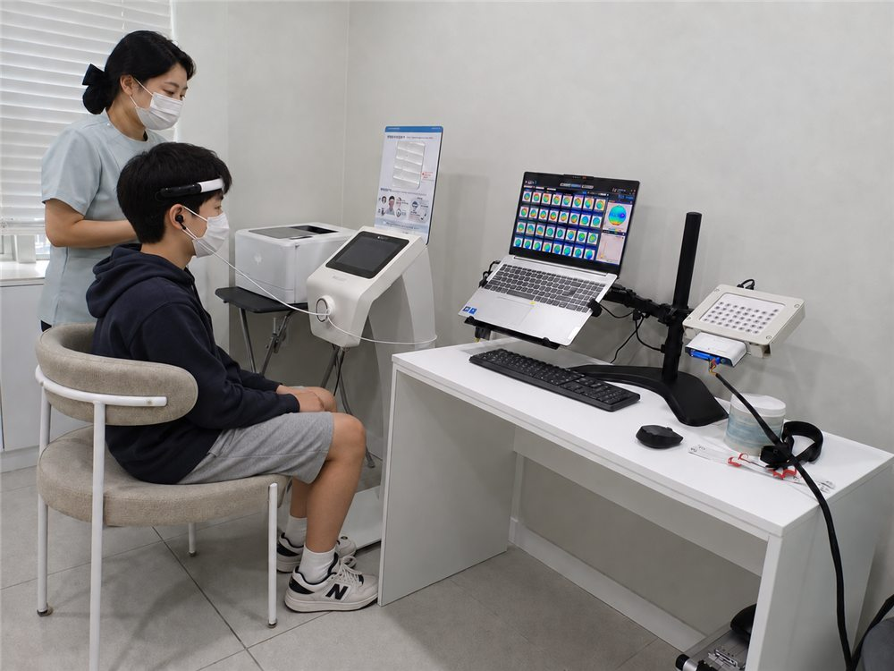
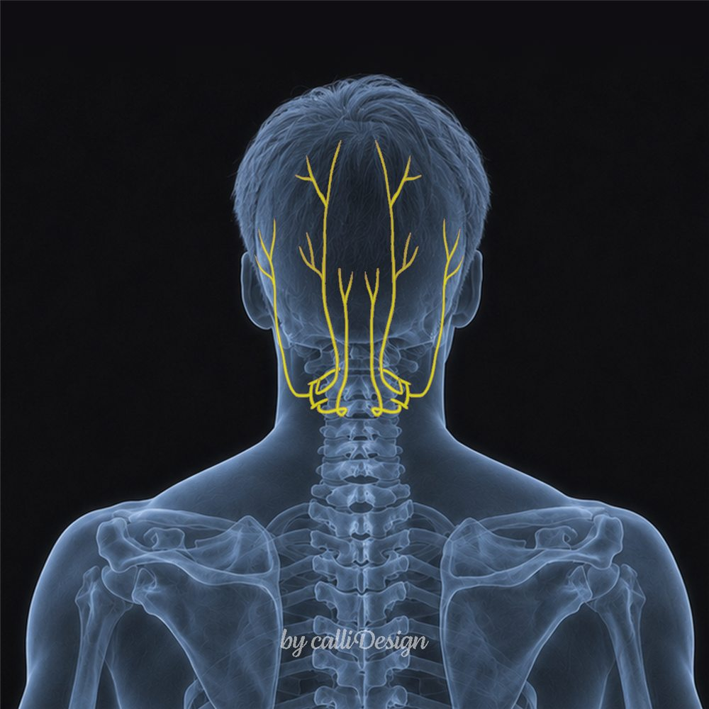
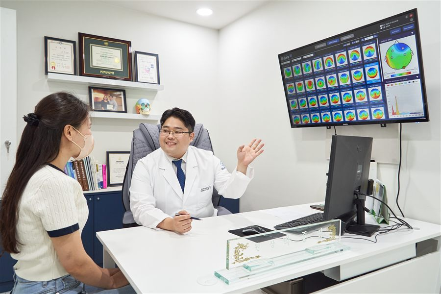

한의학+미국 정골의학+통합의학3가지 관점으로 만성 뇌신경질환·자율신경질환을 진료합니다
한의학
문진·맥진·복진 등 한의학적 진단을 바탕으로 침·약침·한약·추나 등 보완 진료의 적합성을 살핍니다.
미국 정골의학
목·척추·근골격계의 구조와 신경 기능의 연결을 함께 보는 관점으로 증상의 배경을 살핍니다.
통합의학
뇌파·자율신경·혈관 검사 등 객관적 검사와 기존 병원 진료 내용을 함께 고려해 진료 방향을 세웁니다.
내 증상 확인
- 한 달에 머리가 아픈 날이 늘었습니다.
- 두통과 구역감 또는 빛·소리 민감성이 있습니다.
- 목·어깨 긴장과 함께 머리가 조입니다.
어떤 질환인지 선택해 보세요
증상 양상에 맞는 안내를 선택하면 원인·감별·진료 방향을 자세히 볼 수 있습니다.

편두통
관자놀이가 쿵쿵 뛰듯 아프고 빛이나 소리에도 예민해지나요? 편두통은 단순히 한쪽 머리가 아픈 문제가 아니라 일상 활동까지 방해하는 신경학적 …
자세히 보기 →
긴장성두통
오후만 되면 머리가 꽉 조여오고 목과 어깨가 무겁다면 긴장형두통의 특징을 확인해 보세요. 흔하다는 이유로 통증을 오래 참기보다 빈도와 악화 …
자세히 보기 →
여성호르몬성두통
생리 전후가 되면 어김없이 머리가 지끈거리거나 속이 메스꺼워지나요? 일정한 주기와 함께 나타나는 두통은 월경 관련 편두통일 수 있습니다.
자세히 보기 →
소아청소년두통
“학교 가기 전부터 머리가 아파요.” 아이의 반복되는 두통을 꾀병이나 학업 스트레스만으로 넘기지 마세요. 성장기에도 편두통과 긴장성두통이 나…
자세히 보기 →군발성두통
한쪽 눈 뒤가 찌르는 듯 아프고 같은 쪽 눈에서 눈물이 흐르나요? 군발성두통은 일반 진통제로 버티기보다 정확한 진단과 적절한 치료가 중요한 …
자세히 보기 →
후두신경통
뒤통수에서 정수리까지 전기가 흐르듯 찌릿한 통증이 올라오나요? 목 통증과 함께 나타나는 후두신경통은 일반적인 긴장성두통과 증상 양상이 다를 …
자세히 보기 →삼차신경통
세수나 양치처럼 가벼운 자극에도 한쪽 얼굴이 번개처럼 아프다면 삼차신경통을 확인해야 합니다. 치아 문제로 생각해 치료받았지만 통증이 계속되는…
자세히 보기 →원인과 감별
편두통·긴장형두통·군발두통·삼차신경통·후두신경통을 구분하고 약물과용두통의 가능성을 확인합니다.
강남뇌편한의원의 진료 방향
두통일지와 기존 검사·약 복용을 검토한 뒤 생활관리와 한의학적 보완 진료를 상담합니다. 필요한 급성기·예방 약물치료를 유지하는 것이 중요합니다.

두통 치료 후기
환자분이 직접 남긴 후기입니다.


환자분이 직접 작성하신 후기이며, 치료 결과와 경과는 개인마다 다를 수 있어 모든 분께 같은 효과를 보장하지 않습니다.
증상이 반복된다면 진료 상담으로 확인해 보세요
한의학 · 미국 정골의학 · 통합의학, 3가지 관점의 진료
증상 시작 시기, 반복되는 상황, 이전 검사 결과, 현재 복용약을 알려주시면 도움이 됩니다.